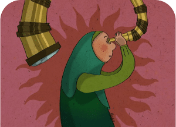

About Usyour ultimate destination for empowerment and knowledge
dissemination. At Unify, we are committed to fostering a
world where women stand strong, advocate for themselves,
and strive for equality in both professional environments
and everyday life.
Feminism in IslamUmmu Salamah was combing her hair when the call to
prayer for the Prophet's prayer began. She was so
startled when she heard the Prophet's .
Unconventional PoliticianSekitar tengah malam pada Maret lalu, anggota
legislatif Eva Kusuma Sundari duduk di tenda darurat
di pelosok pedesaan Jawa Timur.
88% of Womens report life improvements after use
Unify
Benefit #1It's easier to share stories on unify and get solutions
from users of all ages and regions.
Benefit #2very useful tips for women
Benefit #3information that relates to women of any age
supportive community make it an ideal platform to
raise
Unify is very informative and useful for women. The
content on women's issues, such as sexual violence, is
very relevant and the tips are very helpful.- CINDY -
I am very impressed with the tips for coping with
sexual violence, both physical and verbal, shared on
this website. The Unify website truly empowers women
to thrive!- WULAN -
Unify is an oasis for women in a challenging world.
Its informative and relevant content, user-friendly
design, and supportive community make it an ideal
platform to raise awareness and empower women.- RATNA -
100% True Information GuaranteeNot sure about unify? Click the button below to get to know
us better.